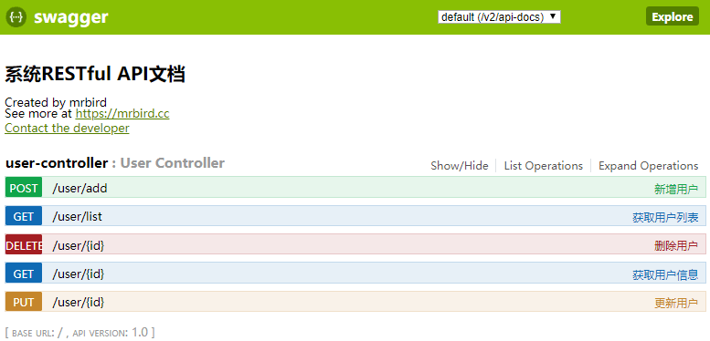
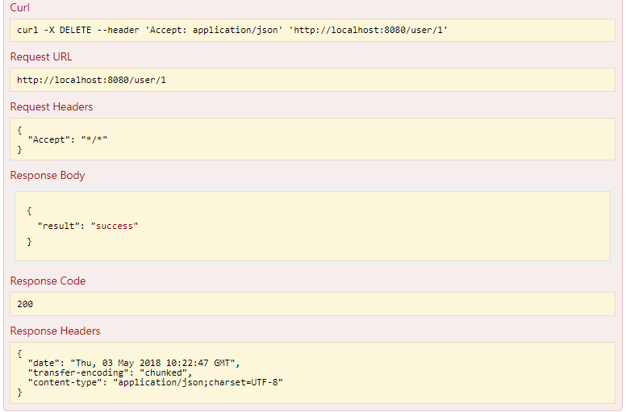

Swagger是一款可以快速生成符合RESTful风格API并进行在线调试的插件。本文将介绍如何在Spring Boot中整合Swagger。
在此之前，我们先聊聊什么是REST。REST实际上为Representational State Transfer的缩写，翻译为“表现层状态转化” 。如果一个架构符合REST 原则，就称它为RESTful架构。
实际上，“表现层状态转化”省略了主语，完整的说应该是“资源表现层状态转化”。什么是资源（Resource）？资源指的是网络中信息的表现形式，比如一段文本，一首歌，一个视频文件等等；什么是表现层（Reresentational）？表现层即资源的展现在你面前的形式，比如文本可以是JSON格式的，也可以是XML形式的，甚至为二进制形式的。图片可以是gif，也可以是PNG；什么是状态转换（State Transfer）？用户可使用URL通过HTTP协议来获取各种资源，HTTP协议包含了一些操作资源的方法，比如：GET 用来获取资源， POST 用来新建资源 , PUT 用来更新资源， DELETE 用来删除资源， PATCH 用来更新资源的部分属性。通过这些HTTP协议的方法来操作资源的过程即为状态转换。
下面对比下传统URL请求和RESTful风格请求的区别：
| 描述 | 传统请求 | 方法 | RESTful请求 | 方法 |
|---|---|---|---|---|
| 查询 | /user/query?name=mrbird | GET | /user?name=mrbird | GET |
| 详情 | /user/getInfo?id=1 | GET | /user/1 | GET |
| 创建 | /user/create?name=mrbird | POST | /user | POST |
| 修改 | /user/update?name=mrbird&id=1 | POST | /user/1 | PUT |
| 删除 | /user/delete?id=1 | GET | /user/1 | DELETE |
从上面这张表，我们大致可以总结下传统请求和RESTful请求的几个区别：
传统请求通过URL来描述行为，如create，delete等；RESTful请求通过URL来描述资源。
RESTful请求通过HTTP请求的方法来描述行为，比如DELETE，POST，PUT等，并且使用HTTP状态码来表示不同的结果。
RESTful请求通过JSON来交换数据。
RESTful只是一种风格，并不是一种强制性的标准。
引入Swagger依赖
本文使用的Swagger版本为2.6.1：
1 | <dependency> |
配置SwaggerConfig
使用JavaConfig的形式配置Swagger：
1 | import org.springframework.context.annotation.Bean; |
在配置类中添加@EnableSwagger2注解来启用Swagger2，apis()定义了扫描的包路径。配置较为简单，其他不做过多说明。
Swagger常用注解
@Api：修饰整个类，描述Controller的作用；@ApiOperation：描述一个类的一个方法，或者说一个接口；@ApiParam：单个参数描述；@ApiModel：用对象来接收参数；@ApiProperty：用对象接收参数时，描述对象的一个字段；@ApiResponse：HTTP响应其中1个描述；@ApiResponses：HTTP响应整体描述；@ApiIgnore：使用该注解忽略这个API；@ApiError：发生错误返回的信息；@ApiImplicitParam：一个请求参数；@ApiImplicitParams：多个请求参数。
编写RESTful API接口
Spring Boot中包含了一些注解，对应于HTTP协议中的方法：
@GetMapping对应HTTP中的GET方法；@PostMapping对应HTTP中的POST方法；@PutMapping对应HTTP中的PUT方法；@DeleteMapping对应HTTP中的DELETE方法；@PatchMapping对应HTTP中的PATCH方法。
我们使用这些注解来编写一个RESTful测试Controller：
1 | import java.util.ArrayList; |
对于不需要生成API的方法或者类，只需要在上面添加@ApiIgnore注解即可。
启动&测试
启动项目，访问http://localhost:8080/swagger-ui.html即可看到Swagger给我们生成的API页面：

点击接口下的“Try it out”Swagger会用curl命令发送请求，并且返回响应信息，如下所示:

源码链接：https://github.com/wuyouzhuguli/Spring-Boot-Demos/tree/master/20.Spring-Boot-Swagger2